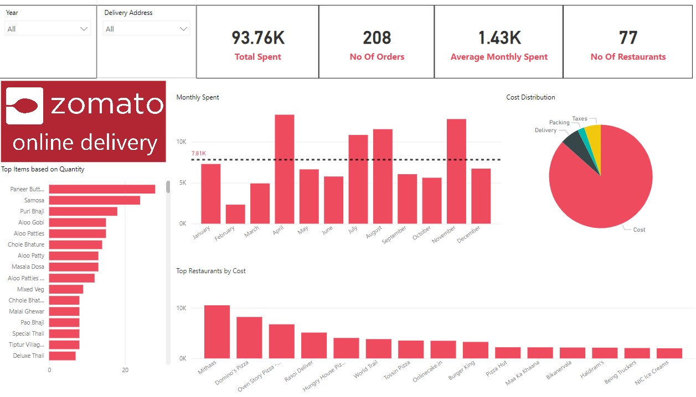

Zomato Food Delivery Analysis
In today's fast-paced world, food delivery services have become an integral part of our lives, offering convenience, variety, and comfort at our fingertips. But have you ever stopped to analyze your own behavior, preferences, and spending habits when it comes to ordering food delivery? In this blog post, we'll dive into the fascinating world of personal insights gleaned from analyzing food delivery data.
Zomato India is a leading food delivery company, known for its user-friendly app and vast restaurant network. Founded in 2008, it has expanded across hundreds of Indian cities, offering convenience and variety to users. With features like user reviews and personalized recommendations, Zomato enhances the dining experience, making it easy for customers to discover and order their favorite dishes
Lets Get Started
The Data for the analysis has been scraped using zomato API which shows users Order history. The data was queried using python requests library. The tables below define the columns extracted for the analysis.
| Column Name | Description |
|---|---|
| order_date | Date of the order |
| cost | Total cost of the order |
| payment_status | Status of payment for the order |
| delivery_address | Address for delivery |
| dish_string | String representation of dishes ordered |
| restaurant_name | Name of the restaurant |
| hashid | Unique identifier for the order |
| taxes | Total taxes applied to the order |
| delivery_charge | Charge for delivery |
| packing_charge | Charge for packing |
| discounts | Total discounts applied to the order |
| Column Name | Description |
|---|---|
| hashid | Unique identifier for the order to connect the orders table to items ordered. |
| itemname | Name of the item |
| unitcost | Cost per unit of the item |
| totalcost | Total cost of the order item |
| quantity | Quantity of the item ordered |
Descriptive Stats
| Statistic | Cost | Taxes | Delivery Charge | Packing Charge | Discounts |
|---|---|---|---|---|---|
| Mean | 468.02 | 24.67 | 27.64 | 10.89 | -48.56 |
| Median | 341.13 | 15.89 | 26.5 | 0 | -47.3 |
| Mode | 305.4 | 0 | 0 | 0 | 0 |
| Standard Deviation | 349.51 | 28.73 | 24.17 | 17.03 | 64.39 |
| Range | 1988.89 | 197.82 | 109 | 90 | 700 |
| Minimum | 61.36 | 0 | 0 | 0 | -700 |
| Maximum | 2050.25 | 197.82 | 109 | 90 | 0 |
| Count | 230 | 230 | 230 | 230 | 230 |
Reading from the table above, we see there are no blank values when we consider the various costs associated. There is high variability in cost as indicated by relatively high standard deviation of 349.5. Other components have low variability and have low standard deviations. The median packing charge is 0 indicating 50% of the orders do not incur packing charges. Taxes range from 0-197.82, it would be interesting to see which items do not incur any taxes as most food items are taxed in India.
For Further analysis, we have removed rows containing payment status other than 1. This leaves us with a total of 208 records in the order table. We will make use of Power BI for further analysis and visualizations.
Does Order Frequency vary based on certain patterns?
The above chart shows number of orders plotted against the time of the day specifically hour of the day when order was placed. Most orders are placed around afternoon between the hours of 2:00-3:00pm.
Lunch is clearly the favorite time to order outside food. What about Day of the week?
Saturday is the most preferred day of the week followed by Sunday. together, they make up almost half of the total orders.
Do orders vary according to seasons?
Are all orders delivered equal?
There does seem to be a large variation between delivery charges by different restaurants. Some restaurants charge as much as 30 percent of total cost while others charge less than 10percent. We look at some resturants with high and low delivery charges and also included packing charges for comparision below. The variability in delivery charge seems to be correlated with the total cost of the order. Delivery charges are more prevalent in orders with lower total cost, the percentage delivery charge compared to cost becomes higher for these orders. We do not have data on distance travelled from delivery location to the delivered location which can be a useful metric here to check if these charges are due to resturants being far away.
How much pie does the government eat?
There is a strong correlation between taxes and total cost. As total cost increases, the share of the government also increases. Intresting to note, there are also some values with 0 taxes.
We attribute this to a discrepancy in the ordering system since there is no common feature which can explain no taxes being levied on these transactions including order date, cost, year of order, resturant.
Item Analysis.
When looking at most ordered items by cost, pizza and cake seem to be a frequent occurrence. Indian curry Panner Butter Masala scores highest in cost and ranks number 3 in Frequency. We can extrapolate Samosa, Chole Bhature are priced low on unitcost basis as these items are the most frequence while they do not even come up in top 10 in terms of expenditure.
The top expenditure restaurant is a sweets and bakery shop. Whats interesting is Pizza shops make up 6 out of 12 top expenditures.
Conclusion
In conclusion, the analysis of Zomato food delivery data has provided valuable insights into user behavior, spending patterns, and trends. Several key findings have emerged from the analysis:
- Order frequency exhibits distinct patterns, with peak times around lunch hours and certain days of the week, notably Saturdays and Sundays.
- There is significant variability in delivery charges among different restaurants, with some charging higher percentages of the total order cost than others.
- Taxes show a strong correlation with total order cost, indicating that as the total cost increases, the share of taxes also increases.
- Certain orders have no taxes applied, suggesting a discrepancy in the ordering system or specific items that do not incur taxes.
- Analysis of item ordering reveals popular items such as pizza and cake, with notable variations in cost and frequency among different food items and restaurants.
Overall, the analysis sheds light on various aspects of food delivery behavior and provides insights that can inform decision-making and strategy development for Zomato and other food delivery services. Further exploration and refinement of the analysis could yield additional insights and opportunities for improvement.
Dashboard
Based on the above findings, we create the dashboard in Power-BI to monitor future spend.
